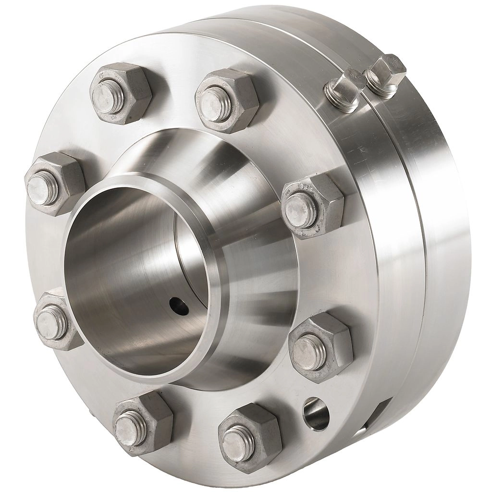

Flanged valves are perhaps the most widely used. Flanges are used to mate valves with adjacent piping and/or equipment.
Flanged end connections are tightened by a number of bolts which individually require less tightening torque than an individual threaded joint for a given application. For this very reason flanged end connections can be used for most valve sizes, pressures and temperatures.
Flanges are usually installed on valves larger than DN50 (2’’). For sizes smaller than DN50 (2’’), threaded-type valves are typically used, depending on the application and safety considerations.
The main advantage of using a flanged valve is that the valve can be easily removed from the line. However, it should be noted that flanges are subject to thermal distortion and shock. Therefore a welded connection would usually be recommended for applications where significant temperature variations occur.